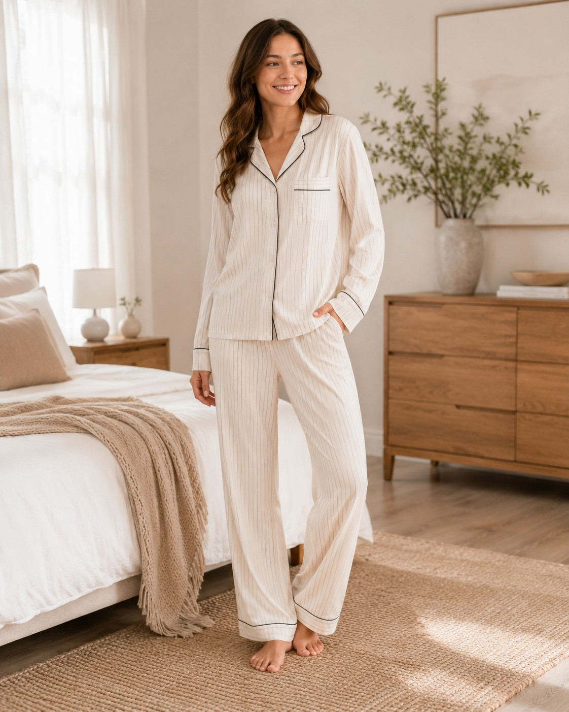
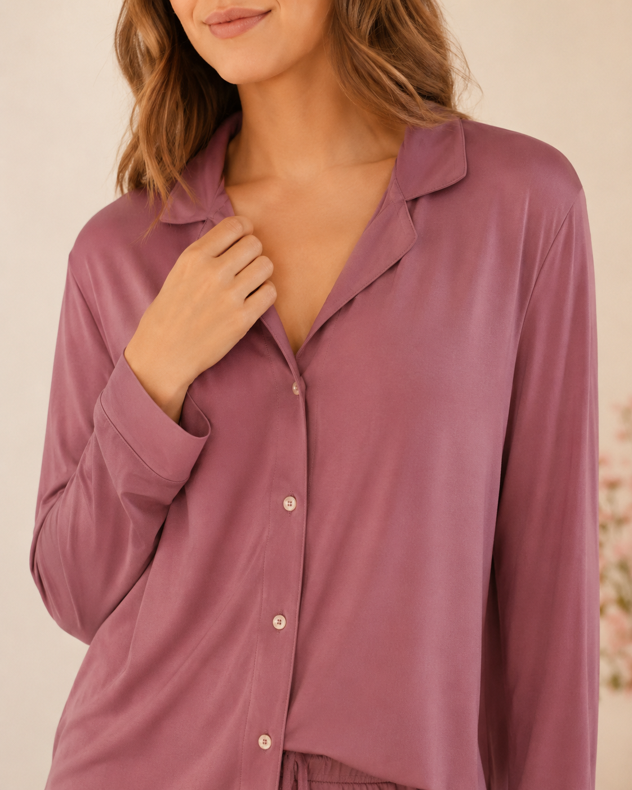
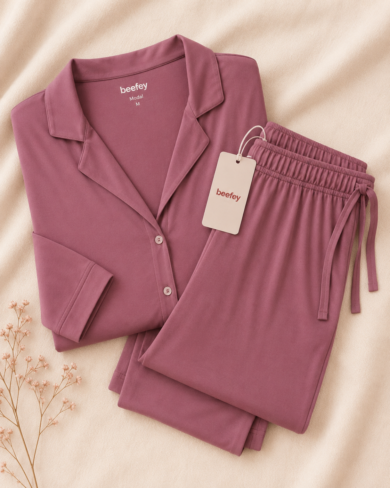

Women pajama sets category
Custom Women Pajama Sets for Private Label Sleepwear Brands
A B2B category page built for buyers who need a clear starting point: compare solid and printed pajama foundations, inspect alternate views, then move into fabric, customization and sample requirements with less back-and-forth.

Each product card uses a model-first image, then switches to an alternate flat-lay or back view on hover.
Women pajama set starting styles
Women Pajama Set Collection
Fabric direction for sourcing
| Fabric Route | Use Direction | What Buyer Should Confirm |
|---|---|---|
| Bamboo Spandex Blend | High-stretch, breathable sets with premium hand-feel | Composition ratio, GSM, stretch recovery and color swatches |
| Modal Spandex Blend | Soft-drape loungewear and classic pajama foundations | Weight, pilling resistance, stretch and customized colors |
| 100% Cotton | Skin-friendly basics, seasonal sleepwear and breathable loungewear | Yarn count, construction, hand-feel and shrinkage standards |
| Cotton Spandex Blend | Durable, stretch-fit basics for everyday wear | Fabric weight, stretch percentage and color fastness |
| Satin Fabric | Gloss-led bridal, gifting and luxury collection capsules | Opacity, luster finish, construction and piping compatibility |
| Woven Fabric | Classic tailored pajama sets and traditional sleep dresses | Thread count, fiber content, print placement and finish |
| Muslin Fabric | Lightweight, textured and exceptionally breathable summer sets | Layers (2-ply/3-ply), texture, softness and color range |
B2B development scope
What the first inquiry should contain01 02 03 04
Style, fabric, brand components and timing — in that order.
Choose a set directionSelect an existing product card or provide a reference garment / tech pack.
Confirm fabric and fitComposition, GSM, hand-feel, stretch, body length and grading are confirmed by style.
Lock branding packageWoven label, care label, hangtag, size sticker, polybag and carton requirements.
Approve sample for bulkThe approved sample becomes the production reference before bulk scheduling.



Women pajama set inquiry
Turn a selected style into a sourcing brief.
Share your target quantity, market and development requirements so our team can prepare the next sourcing steps.
Starting style / reference imageCompany, quantity and target marketFabric, color / print and branding needsTarget launch timing and sample request